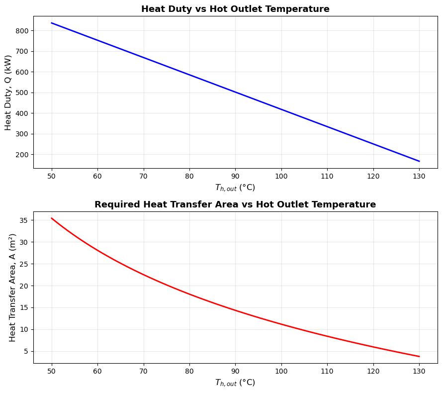
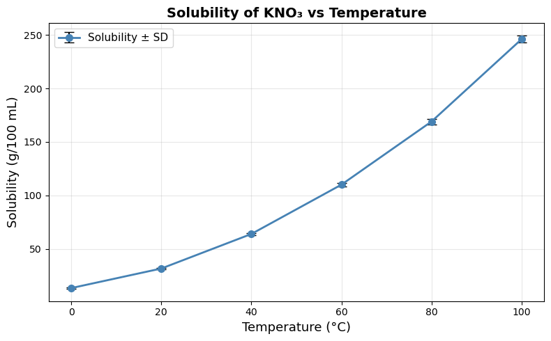
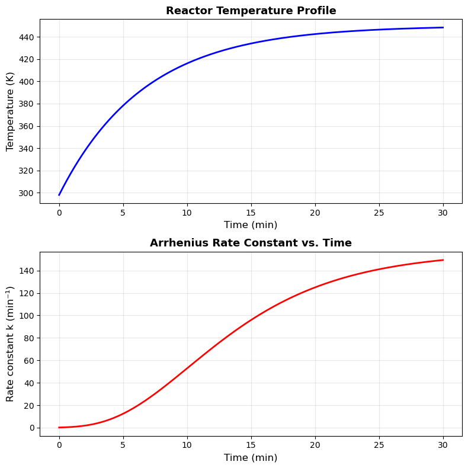

Homework 04: Matplotlib & NumPy#
Release Date: Feb 5
Due Date: Feb 18 11:59 PM
Total Points: 60 pts (+ 5 bonus pts)
Instructions:
Complete all problems in this notebook
Show all your work with clear comments
Use appropriate variable names
Format all outputs professionally with units
Test your code to ensure it runs without errors
Submission:
Submit this completed Jupyter notebook to Gradescope
Make sure all cells have been executed and outputs are visible
Discussion (Task 6):
A higher activation energy \(E_a\) means that a greater fraction of molecular collisions must overcome a larger energy barrier for reaction to occur, making the reaction rate more sensitive to temperature changes. For N₂O₅ decomposition, the fitted \(E_a \approx 102.6\) kJ/mol is moderately high — the rate constant increases roughly 45-fold from 273 K to 358 K (just an 85 K rise), confirming strong temperature sensitivity. This is consistent with N₂O₅ being a metastable molecule whose N–O bonds require significant energy to break.
Problem 1: Countercurrent Heat Exchanger — LMTD Analysis#
The diagram below shows the countercurrent flow arrangement. The hot stream enters from the left and exits on the right; the cold (utility) stream flows in the opposite direction — entering from the right and exiting on the left.
COUNTERCURRENT SHELL-AND-TUBE HEAT EXCHANGER
══════════════════════════════════════════════
HOT stream (shell side)
───────────────────────────────────────────────────────────────────►
T_h,in = 150 °C T_h,out = 50–130 °C
ṁ_h = 2.0 kg/s (design sweep)
c_p,h = 4.18 kJ/(kg·K)
╔══════╦═══════════════════════════════════════════════╦══════╗
║ ║░░░░░░░░░░░░░░░░░░░░░░░░░░░░░░░░░░░░░░░░░░░░░░░║ ║
║ IN ║░░░░░░░░░ TUBE BUNDLE (U = 500 W/m²·K) ░░░░░░░║ OUT ║
║ ║░░░░░░░░░░░░░░░░░░░░░░░░░░░░░░░░░░░░░░░░░░░░░░░║ ║
╚══════╩═══════════════════════════════════════════════╩══════╝
T_c,out = 80 °C T_c,in = 20 °C
(fixed) (fixed)
◄───────────────────────────────────────────────────────────────────
COLD stream (tube side)
ΔT at hot inlet end: ΔT₁ = T_h,in − T_c,out = 150 − 80 = 70 °C (fixed)
ΔT at hot outlet end: ΔT₂ = T_h,out − T_c,in = (50–130) − 20 (varies)
ΔT₁ − ΔT₂
LMTD = ─────────────────────────────
ln( ΔT₁ / ΔT₂ )
Q = ṁ_h · c_p,h · (T_h,in − T_h,out) [kW]
A = Q / (U · LMTD) [m²]
In a countercurrent shell-and-tube heat exchanger, a hot process stream is cooled by a cold utility stream flowing in the opposite direction. The heat duty and required area are governed by:
where the log mean temperature difference (LMTD) for a countercurrent exchanger is:
Fixed conditions:
Hot stream inlet: \(T_{h,\text{in}} = 150\) °C, specific heat \(c_{p,h} = 4.18\) kJ/(kg·K), mass flow rate \(\dot{m}_h = 2.0\) kg/s
Cold stream inlet: \(T_{c,\text{in}} = 20\) °C
Overall heat transfer coefficient: \(U = 500\) W/(m²·K)
Design sweep: vary the hot stream outlet temperature \(T_{h,\text{out}}\) from 50 °C to 130 °C (use np.linspace with 100 points). For each \(T_{h,\text{out}}\), assume the cold stream outlet is fixed at \(T_{c,\text{out}} = 80\) °C.
Tasks:
Compute arrays for \(Q\) (kW), \(\Delta T_{\text{lm}}\) (°C), and required heat transfer area \(A\) (m²) across all values of \(T_{h,\text{out}}\).
(Hint: be careful with units — convert \(U\) to kW/(m²·K) or \(Q\) to W consistently.)Create a 2×1 subplot (
figsize=(9, 8)):Top subplot: \(Q\) (kW) vs \(T_{h,\text{out}}\) (°C) — title
'Heat Duty vs Hot Outlet Temperature'Bottom subplot: Required area \(A\) (m²) vs \(T_{h,\text{out}}\) (°C) — title
'Required Heat Transfer Area vs Hot Outlet Temperature'Both: label axes, add grid.
Using numpy, find and print the \(T_{h,\text{out}}\) that requires the minimum heat transfer area and report the corresponding \(Q\) and \(A\) values.
Print the \(T_{h,\text{out}}\) range where \(\Delta T_{\text{lm}} < 10\) °C — this is a region of poor driving force.
In a markdown cell below your code, write 2–3 sentences: Why does the required area \(A\) increase as \(T_{h,\text{out}}\) decreases? What practical constraint prevents you from cooling the hot stream all the way to \(T_{c,\text{in}}\)?
import numpy as np
import matplotlib.pyplot as plt
# Fixed conditions
T_h_in = 150.0 # °C
T_c_in = 20.0 # °C
T_c_out = 80.0 # °C
cp_h = 4.18 # kJ/(kg·K)
m_dot_h = 2.0 # kg/s
U = 0.5 # kW/(m²·K) [500 W/(m²·K) ÷ 1000]
T_h_out = np.linspace(50, 130, 100) # °C
# Task 1: Heat duty, LMTD, and required area
Q = m_dot_h * cp_h * (T_h_in - T_h_out) # kW
dT1 = T_h_in - T_c_out # = 70 °C (fixed, hot-in vs cold-out)
dT2 = T_h_out - T_c_in # varies (hot-out vs cold-in)
LMTD = (dT1 - dT2) / np.log(dT1 / dT2) # °C
A = Q / (U * LMTD) # m²
# Task 2: 2×1 subplots
fig, axes = plt.subplots(2, 1, figsize=(9, 8))
axes[0].plot(T_h_out, Q, 'b-', linewidth=2)
axes[0].set_xlabel('$T_{h,out}$ (°C)', fontsize=12)
axes[0].set_ylabel('Heat Duty, Q (kW)', fontsize=12)
axes[0].set_title('Heat Duty vs Hot Outlet Temperature', fontsize=13, fontweight='bold')
axes[0].grid(True, alpha=0.3)
axes[1].plot(T_h_out, A, 'r-', linewidth=2)
axes[1].set_xlabel('$T_{h,out}$ (°C)', fontsize=12)
axes[1].set_ylabel('Heat Transfer Area, A (m²)', fontsize=12)
axes[1].set_title('Required Heat Transfer Area vs Hot Outlet Temperature', fontsize=13, fontweight='bold')
axes[1].grid(True, alpha=0.3)
plt.tight_layout()
plt.show()
# Task 3: T_h_out with minimum area
idx_min = np.argmin(A)
print(f"Minimum area condition:")
print(f" T_h_out = {T_h_out[idx_min]:.2f} °C")
print(f" Q = {Q[idx_min]:.2f} kW")
print(f" A = {A[idx_min]:.3f} m²")
# Task 4: T_h_out range where LMTD < 55 °C (low driving-force region)
mask = LMTD < 55
if np.any(mask):
print(f"\nLow driving-force region (LMTD < 55 °C):")
print(f" T_h_out range: {T_h_out[mask].min():.2f} °C → {T_h_out[mask].max():.2f} °C")
print(f" LMTD range: {LMTD[mask].min():.2f} °C → {LMTD[mask].max():.2f} °C")
else:
print("\nLMTD stays above 55 °C across the entire sweep.")

Minimum area condition:
T_h_out = 130.00 °C
Q = 167.20 kW
A = 3.779 m²
Low driving-force region (LMTD < 55 °C):
T_h_out range: 50.00 °C → 62.12 °C
LMTD range: 47.21 °C → 54.89 °C
Discussion (Task 5):
As \(T_{h,\text{out}}\) decreases, the heat duty \(Q\) increases (more heat must be removed), while the LMTD simultaneously decreases because the temperature difference between the two streams shrinks — both effects drive the required area \(A = Q / (U \Delta T_{\text{lm}})\) sharply upward. The practical constraint preventing cooling all the way to \(T_{c,\text{in}} = 20\) °C is the temperature pinch: in a countercurrent exchanger \(T_{h,\text{out}}\) must remain above \(T_{c,\text{in}}\), otherwise \(\Delta T_2 \to 0\), LMTD \(\to 0\), and the required area becomes infinite — physically impossible regardless of exchanger size.
Problem 4: NumPy Array Operations — Temperature Data#
You are given temperature readings (in °C) from 3 sensors at 6 time points (every 10 minutes):
data = np.array([
[22.1, 35.4, 48.2, 59.7, 68.3, 72.5], # Sensor 1
[21.8, 34.9, 47.5, 58.1, 67.0, 71.2], # Sensor 2
[22.5, 36.0, 49.1, 61.2, 70.4, 74.8], # Sensor 3
])
Tasks:
Print the shape, number of dimensions, and total number of elements of
data.Convert all temperatures from °C to Kelvin (add 273.15) and store as
data_K.Using
axisarguments, compute and print:The mean temperature at each time point (average across sensors)
The mean temperature for each sensor (average across time)
Find and print the maximum temperature recorded and which sensor it came from (use
np.argmax).Extract and print the last two time points for all sensors using slicing.
import numpy as np
data = np.array([
[22.1, 35.4, 48.2, 59.7, 68.3, 72.5], # Sensor 1
[21.8, 34.9, 47.5, 58.1, 67.0, 71.2], # Sensor 2
[22.5, 36.0, 49.1, 61.2, 70.4, 74.8], # Sensor 3
])
# Task 1: Shape, dimensions, size
print("Shape: ", data.shape)
print("Dimensions: ", data.ndim)
print("Total elements:", data.size)
# Task 2: Convert to Kelvin
data_K = data + 273.15
print("\nData in Kelvin:\n", data_K)
# Task 3: Mean along axes
mean_per_time = np.mean(data, axis=0) # average across sensors (collapse rows)
mean_per_sensor = np.mean(data, axis=1) # average across time (collapse columns)
time_points = [0, 10, 20, 30, 40, 50]
print("\nMean temperature at each time point (°C):")
for t, m in zip(time_points, mean_per_time):
print(f" t = {t:2d} min: {m:.2f} °C")
print("\nMean temperature per sensor (°C):")
for i, m in enumerate(mean_per_sensor, start=1):
print(f" Sensor {i}: {m:.2f} °C")
# Task 4: Maximum temperature and which sensor
max_temp = np.max(data)
sensor_idx = np.argmax(np.max(data, axis=1)) # sensor with the overall max
print(f"\nMaximum temperature recorded: {max_temp} °C")
print(f" → from Sensor {sensor_idx + 1}")
# Task 5: Last two time points for all sensors (columns -2 and -1)
last_two = data[:, -2:]
print("\nLast two time points for all sensors (°C):")
print(last_two)
Shape: (3, 6)
Dimensions: 2
Total elements: 18
Data in Kelvin:
[[295.25 308.55 321.35 332.85 341.45 345.65]
[294.95 308.05 320.65 331.25 340.15 344.35]
[295.65 309.15 322.25 334.35 343.55 347.95]]
Mean temperature at each time point (°C):
t = 0 min: 22.13 °C
t = 10 min: 35.43 °C
t = 20 min: 48.27 °C
t = 30 min: 59.67 °C
t = 40 min: 68.57 °C
t = 50 min: 72.83 °C
Mean temperature per sensor (°C):
Sensor 1: 51.03 °C
Sensor 2: 50.08 °C
Sensor 3: 52.33 °C
Maximum temperature recorded: 74.8 °C
→ from Sensor 3
Last two time points for all sensors (°C):
[[68.3 72.5]
[67. 71.2]
[70.4 74.8]]
Problem 5: Scatter Plot with Error Bars — Experimental Data#
A student measured the solubility of KNO₃ (g per 100 mL water) at different temperatures. Each measurement was repeated 3 times; below are the mean values and standard deviations:
Temperature (°C) |
Solubility mean (g/100 mL) |
Std dev (g/100 mL) |
|---|---|---|
0 |
13.3 |
0.4 |
20 |
31.6 |
0.7 |
40 |
63.9 |
1.1 |
60 |
110.0 |
1.8 |
80 |
169.0 |
2.5 |
100 |
246.0 |
3.2 |
Tasks:
Use
plt.errorbar()to plot solubility vs. temperature with error bars representing the standard deviation.Use
fmt='o-',capsize=5,color='steelblue'.
Add axis labels (
'Temperature (°C)','Solubility (g/100 mL)'), title, and grid.Using numpy, compute and print the percent relative standard deviation (
std/mean * 100) for each temperature. Usenp.arrayfor the mean and std data.
import numpy as np
import matplotlib.pyplot as plt
temperature = np.array([0, 20, 40, 60, 80, 100]) # °C
solubility = np.array([13.3, 31.6, 63.9, 110.0, 169.0, 246.0]) # g/100 mL
std_dev = np.array([0.4, 0.7, 1.1, 1.8, 2.5, 3.2]) # g/100 mL
# Task 1 & 2: Error bar plot
plt.figure(figsize=(8, 5))
plt.errorbar(temperature, solubility, yerr=std_dev,
fmt='o-', capsize=5, color='steelblue',
ecolor='black', elinewidth=1.5,
linewidth=2, markersize=7, label='Solubility ± SD')
plt.xlabel('Temperature (°C)', fontsize=13)
plt.ylabel('Solubility (g/100 mL)', fontsize=13)
plt.title('Solubility of KNO₃ vs Temperature', fontsize=14, fontweight='bold')
plt.legend(fontsize=11)
plt.grid(True, alpha=0.3)
plt.tight_layout()
plt.show()
# Task 3: Percent relative standard deviation
percent_rsd = std_dev / solubility * 100
print("Percent Relative Standard Deviation (%RSD):")
for T, rsd in zip(temperature, percent_rsd):
print(f" T = {T:3d} °C: %RSD = {rsd:.2f}%")

Percent Relative Standard Deviation (%RSD):
T = 0 °C: %RSD = 3.01%
T = 20 °C: %RSD = 2.22%
T = 40 °C: %RSD = 1.72%
T = 60 °C: %RSD = 1.64%
T = 80 °C: %RSD = 1.48%
T = 100 °C: %RSD = 1.30%
Problem 6: Combined NumPy + Matplotlib — Reactor Temperature Profile#
A batch reactor heats from ambient temperature (298 K) to a setpoint of 450 K following:
with \(T_0 = 298\) K, \(T_\infty = 450\) K, \(\alpha = 0.15\) min⁻¹, over \(t = 0\) to \(30\) min.
The reaction rate constant follows the Arrhenius equation:
with \(A = 1.0 \times 10^8\) min⁻¹, \(E_a = 50{,}000\) J/mol, \(R = 8.314\) J/(mol·K).
Tasks:
Use
np.linspace(0, 30, 300)for time.Compute
T(t)andk(T(t))using numpy (no loops).Create a 2×1 subplot figure (
figsize=(8, 8)):Top subplot: Temperature (K) vs. Time (min) — label axes, add title
'Reactor Temperature Profile', grid.Bottom subplot: Rate constant k (min⁻¹) vs. Time (min) — label axes, add title
'Arrhenius Rate Constant vs. Time', grid.
Add
plt.tight_layout().Print the maximum rate constant and the time at which it occurs (use
np.argmax).
import numpy as np
import matplotlib.pyplot as plt
# Parameters
T0 = 298.0 # K
T_inf = 450.0 # K
alpha = 0.15 # min^-1
A = 1.0e8 # min^-1 (pre-exponential factor)
Ea = 50000.0 # J/mol
R = 8.314 # J/(mol·K)
# Task 1 & 2: Compute T(t) and k(T) using numpy (no loops)
t = np.linspace(0, 30, 300) # min
T = T_inf - (T_inf - T0) * np.exp(-alpha * t) # K
k = A * np.exp(-Ea / (R * T)) # min^-1
# Task 3: 2x1 subplots
fig, axes = plt.subplots(2, 1, figsize=(8, 8))
# Top: Temperature profile
axes[0].plot(t, T, 'b-', linewidth=2)
axes[0].set_xlabel('Time (min)', fontsize=12)
axes[0].set_ylabel('Temperature (K)', fontsize=12)
axes[0].set_title('Reactor Temperature Profile', fontsize=13, fontweight='bold')
axes[0].grid(True, alpha=0.3)
# Bottom: Arrhenius rate constant
axes[1].plot(t, k, 'r-', linewidth=2)
axes[1].set_xlabel('Time (min)', fontsize=12)
axes[1].set_ylabel('Rate constant k (min⁻¹)', fontsize=12)
axes[1].set_title('Arrhenius Rate Constant vs. Time', fontsize=13, fontweight='bold')
axes[1].grid(True, alpha=0.3)
plt.tight_layout()
plt.show()
# Task 5: Max rate constant and time at which it occurs
k_max = np.max(k)
t_max = t[np.argmax(k)]
print(f"Maximum rate constant: k = {k_max:.4e} min⁻¹")
print(f"Occurs at t = {t_max:.2f} min")

Maximum rate constant: k = 1.4931e+02 min⁻¹
Occurs at t = 30.00 min